Outcome4.7 / 5 decision confidence across 3 test participants
The Problem
Yuki is an international student from China studying UX design in
Vancouver. She likes art, music, and snowboarding. She takes the
bus everywhere. And every time she opens Eventbrite or Meetup to
find something to do on the weekend, the experience falls apart in
the same ways.
The recommendations are wrong. The categories are hard to find.
Events that might actually interest her are buried three pages
deep. And when she does find something, she has no idea how to get
there by transit, what to bring, or whether the event is even
appropriate for someone who has never tried the activity before.
"I need to know the traffic. How can I go to hiking? It's close
or far."
Yuki, during user interview
She wants to try hiking. She keeps saying so. But the gap between
wanting to go and actually going is filled with unanswered
questions about gear, bus routes, and trail difficulty. So hiking
stays on the list. Another weekend passes.
The problem is not motivation. Yuki is willing to explore alone if
she has to. The problem is that no existing platform gives her the
logistical context she needs to commit. Not one of them tells her
which bus to take.
Research
Approach
I conducted a semi-structured interview with Yuki, in person,
about 30 minutes. The goal was to understand how she currently
discovers events, what breaks down in that process, and what
information she needs before she is willing to commit to attending
something.
I also reviewed Eventbrite and Meetup as competitors, not through
a formal audit but by walking through their onboarding and search
flows with Yuki's constraints in mind. Neither platform surfaces
transit information. Neither asks newcomers what kind of
experience level they are comfortable with. Both bury filtering
behind multiple taps.
Key Findings
Broken discovery. Yuki described opening
Eventbrite and being shown tech meetups and corporate networking
events. The things she would actually attend, sketch nights and
art walks and music events, required her to scroll past content
that was clearly not for her. "It always recommend me some new
activities, but it's not what I want to find."
Transit as a wall. Every event listing she found
gave her a location name. Commercial Drive. Grouse Mountain. None
of them told her which bus to take, how long the ride would be, or
how far she would need to walk from the stop. She described having
to open Google Maps as a separate step every single time, and
often deciding not to bother.
Newcomer friction. Yuki wanted to try hiking but
did not know what gear to bring, what trails were accessible by
transit, or whether a particular event expected prior experience.
This information gap kept her cycling through the same familiar
activities instead of branching out. "Maybe I need to buy some
tools... I don't know."
Journey Map
I mapped Yuki's current experience across five phases: Trigger,
Search, Scroll and Dig, Evaluate Logistics, and Decision. The
emotional low point lands squarely in Evaluate Logistics, which is
where she runs into the transit question and the information gaps
that prevent her from committing. This phase became the design
target.
Yuki's current experience mapped across five phases
Problem Statements
She cannot get there
The listing says "Commercial Drive." Which bus? How long? Is it
walkable from the stop? She closes the app.
She wants to go but will not
Hiking keeps coming up. She does not own the gear, does not know
the trails, and cannot reach them by bus. It stays on the
someday list.
Process
Jobs To Be Done
"Tell it who I am." First launch. Set interests, transit mode, and
goals so the feed actually reflects what she cares about.
"Show me what fits." Home screen. Events that are nearby,
relevant, and reachable by her transit mode. Less scrolling, more
going.
"Help me commit." Event detail. Transit directions, duration, what
to bring. Everything she needs to say yes instead of maybe.
User Flows
I built three flows in Figma. A high-level user flow covering all
four tab destinations (discover, explore, saved, profile) with the
onboarding path for first-time users. A task flow for onboarding,
six screens trimmed from an original eight after consolidating the
newcomer check and social vibe steps. And a task flow for the core
discovery loop mapped to the journey map phases: trigger, search,
scroll and dig, evaluate logistics, decision.
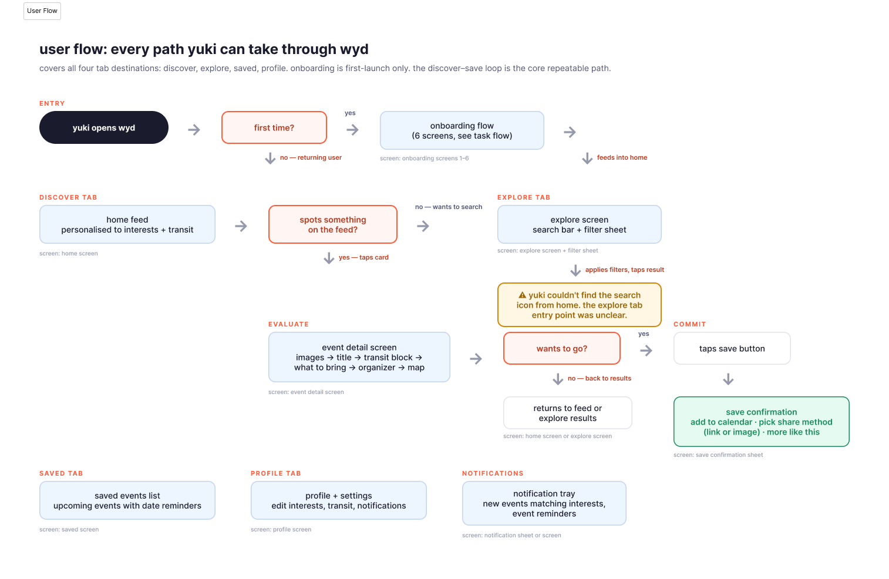
High-level user flow covering all four tab destinations
Brand Identity
The brand direction is called Powder and Ink. Ink because Yuki
sketches. Powder because she rides. The brush-stroke wordmark
references the physicality of paint on paper rather than the
sterile feel of the apps she gave up on.
The palette is built from three families: Ink (dark navy, primary
text and surfaces), Coral (the accent colour for actions and
emphasis), and Cream (warm off-white backgrounds). All brand copy
is lowercase. Typography follows Apple's Human Interface
Guidelines using SF Pro, with an 8pt spacing grid and 44pt minimum
touch targets.
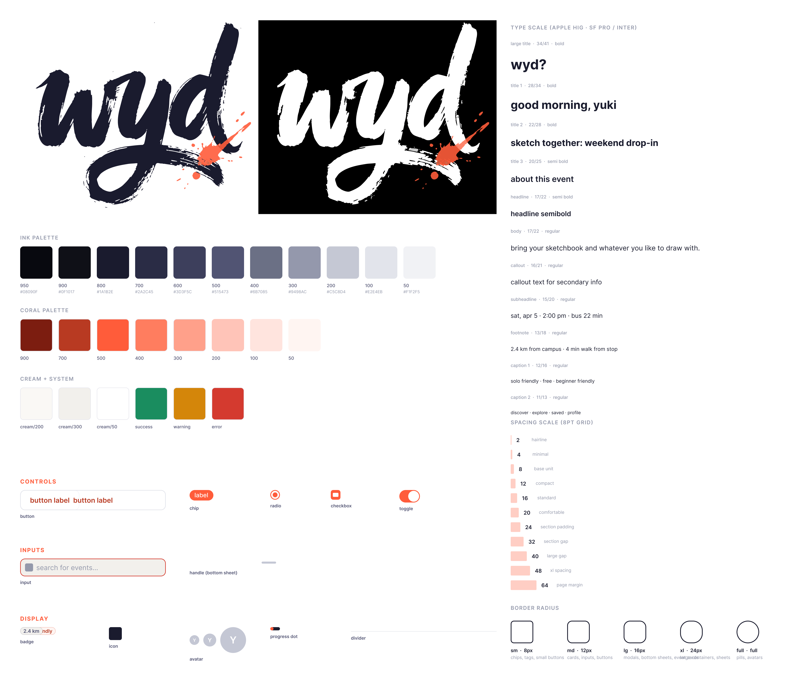
Powder and Ink: brand reference board
Design System
The prototype uses atomic design. Twelve atoms (buttons, chips,
inputs, avatars, badges, toggles, progress dots, and others) nest
into eight molecules (search bar, transit block, event card,
filter chip row, and others), which compose into nine organisms
(full screens). One hundred and twenty-seven design tokens across
four collections, with 247 bindings across the component library.
The transit block is the molecule that matters most. It shows bus
route, travel time, distance, and walk from stop in a single
component. It appears on event cards, the event detail screen, and
the save confirmation. Built once, bound to tokens, reused
everywhere.
Three semantic modes (Light, Dark, and Wireframe) mean the same
component instances serve both the hi-fi prototype and the lo-fi
wireframes. Switching the Semantic collection to Wireframe mode
turns the entire prototype greyscale. One toggle.
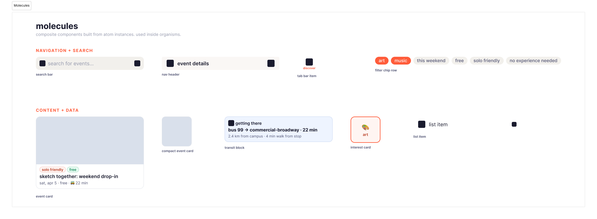
Molecules: the transit block (centre) is the most reused component
Lo-Fi Wireframes
Sixteen screens across three flows: seven for onboarding, six for
the discovery and save loop, and three supporting screens for
saved events, profile, and notifications. Built using the
Wireframe mode of the design system, which meant the components
were structurally identical to the hi-fi but stripped of colour
and visual polish. These wireframes went directly into usability
testing.
16 wireframe screens built in the design system's Wireframe mode
The Product
Hi-Fi Prototype
The hi-fi prototype covers 13 screens across two flows.
The onboarding flow has seven screens. Each collects one piece of
information: city and location, interests (from eight
emoji-labelled categories), transit mode (bus, skytrain, car,
walking), and notification preference. The copy uses the PET
framework: persuasion on the value prop screen, emotion on the
welcome and ready screens, and trust on the screens that ask for
location and notification access. Every screen after the welcome
is skippable. The final screen reads "let's see wyd this weekend"
and its CTA says "show me," not "get started," because the promise
is immediate.
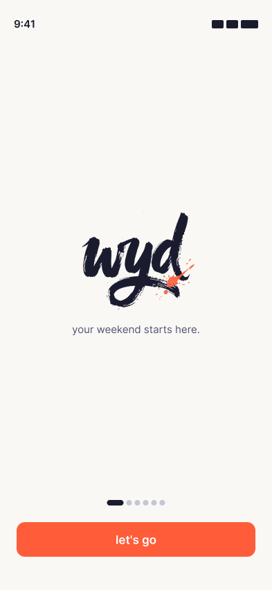
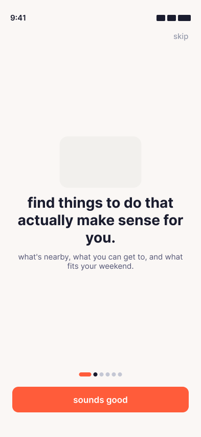
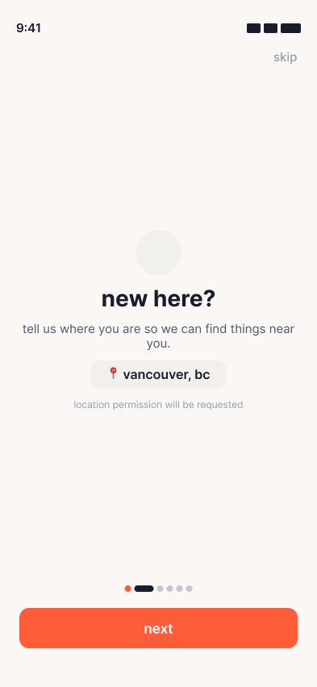
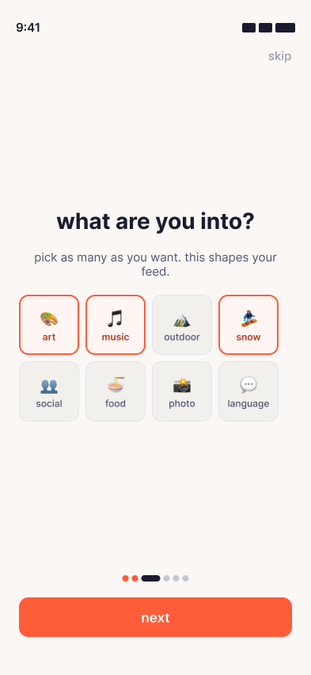
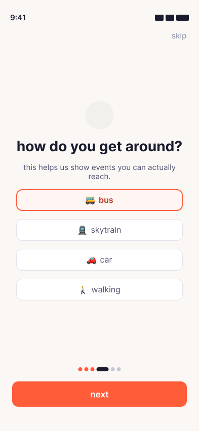
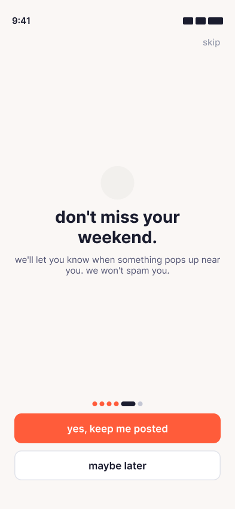
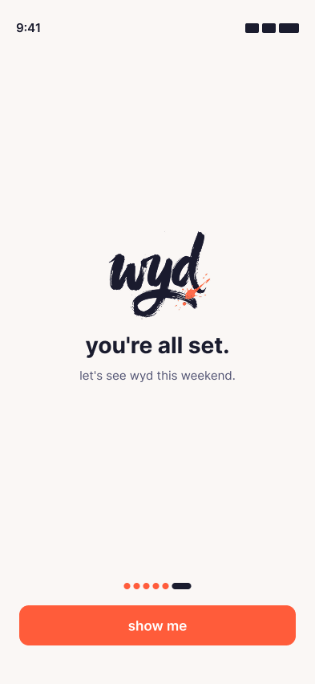
Onboarding: 7 screens, each collecting one piece of information
The discovery flow has six screens. The home screen shows a
personalized greeting, a search bar, category chips reflecting her
onboarding selections, and a feed of event cards with transit time
in the metadata row. The explore screen adds active filter chips
and a filter icon that opens the filter sheet. The filter sheet
lets her narrow by time, vibe, price, and transit mode. The event
detail screen is where the product earns its keep: hero image,
badges (solo friendly, no experience needed, free), full metadata
including duration, the transit block in a blue-tinted surface, a
map placeholder, a "what to bring" section, and organiser info
with external links. The save confirmation includes a calendar
prompt, share options (link or image), "more like this"
recommendations, and a small delight moment: "this is your 3rd
event!"
The empty state gives two exit paths: clear filters, or try a new
search.
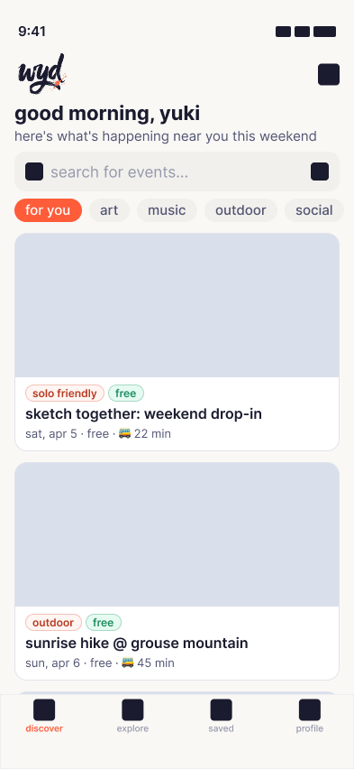
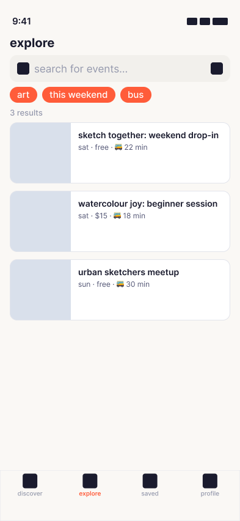
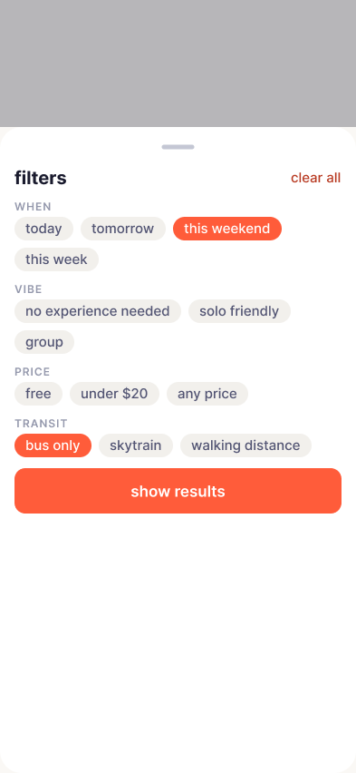
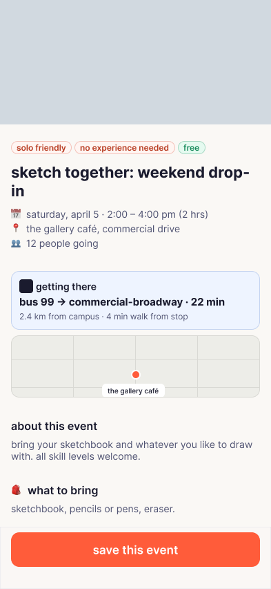
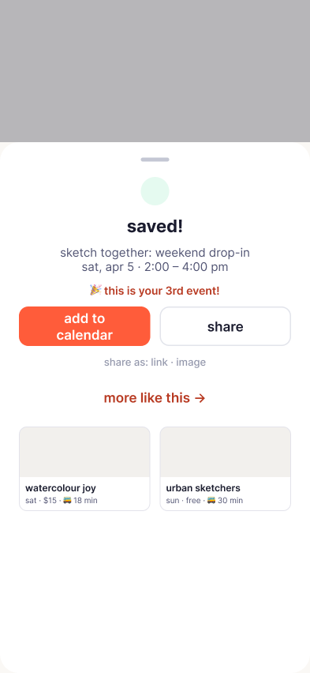
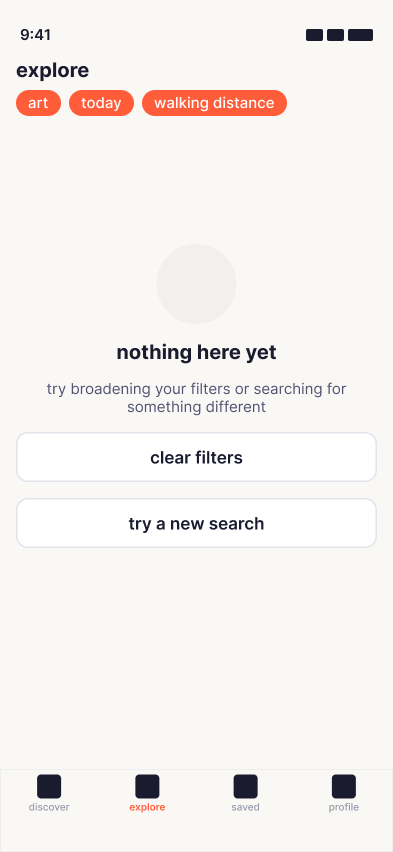
Discovery: home, explore, filter, event detail, save, empty state
Testing and Iteration
Usability Testing
I tested the hi-fi prototype with three participants. All were
newcomers to Vancouver (8 months, 12 months, and 3 months), all
relied on public transit, and all had used at least one event
platform before. Sessions were one-on-one, using the think-aloud
protocol with the Figma prototype on a mobile device.
Each participant walked through four tasks: complete onboarding,
find an event from the home screen, explore and filter, and
evaluate and save an event.
4.7 / 5
enough information to decide
4.0 / 5
would use again
3.3 / 5
ease of finding something
What Worked
The transit block was the standout. All three participants reacted
to it strongly. One said he normally has to check Google Maps
separately. Another said the transit information would be the
deciding factor in whether she actually committed to attending an
event. A third recognized his own bus route and said "it knows my
bus?" Route, travel time, and walk from stop was what each of them
pointed to first.
"It knows my bus? That's really cool."
Marco, exchange student, 3 months in Vancouver
What Did Not Work
The filter sheet was unreachable. All three participants tried to
modify the filter chips by tapping them directly. When that
failed, two noticed the filter icon but it was not wired. The
third did not notice the icon at all. This was the finding that
mattered most: the filter system, which is one of the primary
answers to the discovery problem, could not be tested because
nobody could reach it.
"I can see there's a filter system because of these chips but I
can't change them."
Priya, junior developer, 12 months in Vancouver
Secondary actions on the save confirmation were dead. Two
participants tried tapping "add to calendar," "share," and the
"more like this" cards. Nothing responded. One described the
screen as "a dead end." The "maybe later" button on the
notifications screen also failed for two participants, forcing
them to tap the primary CTA instead. That undermines the trust the
onboarding is supposed to build.
"It feels like a dead end. I can see what I'd want to do next
but I can't do it."
Marco, on the save confirmation screen
Two of three participants moved through onboarding in under a
minute without reading the subtitle text on the value prop screen.
The transit-awareness promise lives in that subtitle. Most users
skipped it.
One participant wanted to select "sports" as an interest but the
option did not exist. He settled on "outdoor" reluctantly. The
interest set was scoped to Yuki's specific profile, which is
defensible for the prototype, but the mismatch made him feel the
app was not for him.
What Changed
The gap between "ease of finding something" (3.3 out of 5) and
"enough information to decide" (4.7 out of 5) confirmed the design
hypothesis: once someone reaches an event detail, the content is
strong. The challenge is the discovery layer that gets them there.
Four fixes went into the second version. The filter icon on the
explore screen was wired to open the filter sheet. The "maybe
later" button on notifications now advances to the next screen.
Secondary actions on the save confirmation respond to taps. And I
toned down the interactive look of the home-screen category chips
so they would stop implying they work as filters. Every one of
these was an interaction change, not a visual one, which is why
the screens look nearly identical in static screenshots.
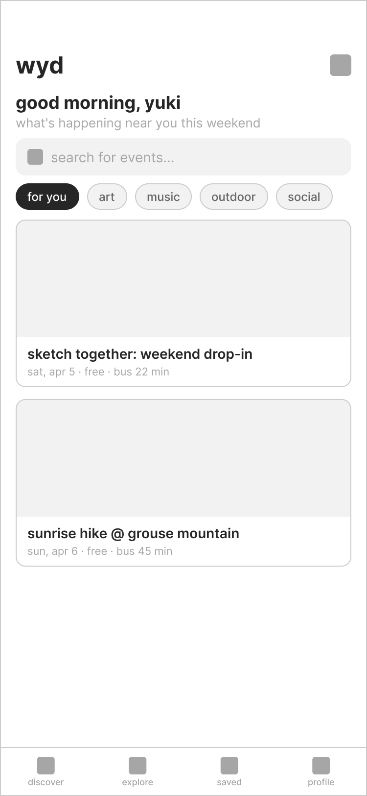
Lo-fi: no visible search entry pointHi-fi: search bar added to home screen
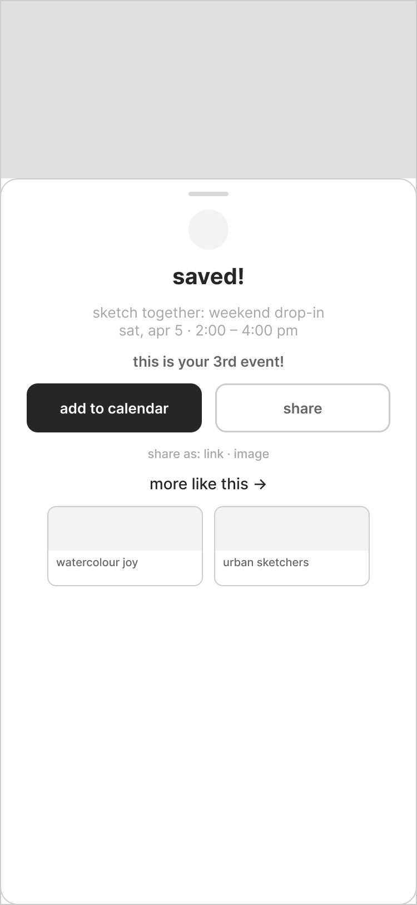
Lo-fi: basic save confirmation only
Hi-fi: calendar, share, recommendations, delight copy
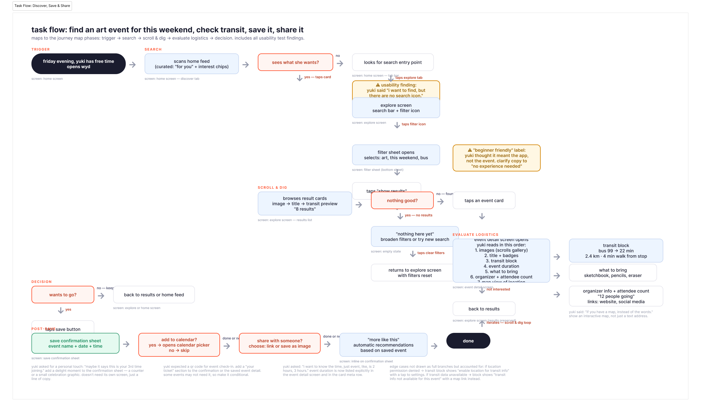
Annotated task flow: amber callouts mark each usability finding
and its resolution
Reflection
Designing for one person clarified the work in ways I did not
expect. Every decision, from the interest categories to the
transit block to the copy on the onboarding screens, had a name
attached to it. There was no abstraction to hide behind. If the
design did not work for Yuki, it did not work.
The design system took longer to build than I anticipated, but it
paid off during iteration. When testing revealed that the filter
sheet needed to be wired, or that labels needed changing, those
updates cascaded through every screen that used the relevant
components. Without the token architecture, each change would have
meant touching a dozen frames by hand.
Usability testing surprised me in a specific way. I expected the
transit block to land well because it was designed around Yuki's
most articulated pain point. What I did not expect was the filter
sheet failing completely. Three out of three participants could
not reach it. That is not an edge case. It is a structural gap
that the design itself created by not giving the filter icon
enough visual weight. The lesson is that features only exist if
users can find them.
If I were to continue this project, three things would come next.
Calendar integration, because Yuki mentioned wanting to avoid
double-booking. Social matching, because she often goes to events
alone not by choice but because her friends are not interested.
And a real transit data layer pulling from TransLink's API,
because the static content in the prototype would need to become
dynamic for the product to actually work.
The audience for wyd extends beyond international students. Anyone
relocating to a new city, whether as a recent graduate, an
immigrant, or someone starting over, faces the same gap between
curiosity and action. The transit constraint is just the most
visible version of a broader problem: platforms that assume you
already know where you are.
Yuki was the first user. She will not be the last.